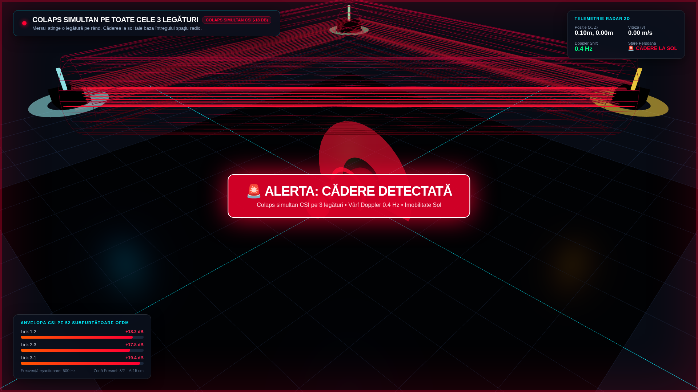

Un punct colorat (cian, roșu în alarmă), titlul mare, insigna opțională și subtitlul. Culoarea insignei vine din timeline. Fundalul insignei este aceeași culoare cu transparență: „22” la finalul codului hex.
Stratul de text de deasupra scenei 3D
HUD înseamnă „head-up display”: informații desenate peste imagine. Hud.tsx arată titlul actului, telemetria, barele de atenuare pe link-uri, bannerul de alarmă și cardurile finale.
HUD-ul în momentul alarmei

Trei praguri pentru bare
| CRITICAL_ATTENUATION_DB | 10 dB | Peste 10 dB, bara și valoarea devin roșii. |
| BAR_FULL_SCALE_DB | 20 dB | 20 dB umple bara complet. |
| MIN_BAR_PERCENT | 8 % | Bara nu dispare niciodată complet. |
| Card | componentă | Un panou absolut, semi-transparent, cu colțuri rotunde și umbră. Celelalte panouri îl folosesc. |
Titlul actului cu o insignă
Patru valori care își schimbă culoarea
Poziția (X, Z), viteza, Doppler și starea. Viteza devine portocalie peste 2 m/s. Doppler devine roz peste 30 Hz. Starea devine roșie în alarmă.
Atenuarea pe fiecare link
Lățimea barei este |atenuare| ÷ 20 × 100 %, între 8 % și 100 %. Peste 10 dB, bara trece de la cian-verde la portocaliu-roșu.
Nota de subsol
Panoul scrie „Frecvență eșantionare: 500 Hz”. Simulatorul Python folosește 250 Hz, iar capturile reale au 28–53 Hz. Valoarea „λ/2 = 6.15 cm” este corectă pentru canalul 6.
Ce apare și când
Hud pune un strat transparent peste tot cadrul. pointerEvents: none lasă clicurile să treacă. În alarmă, o margine roșie pulsează cu sinusul cadrului. Panourile de telemetrie apar din actul 2 și dispar când apar cardurile finale.